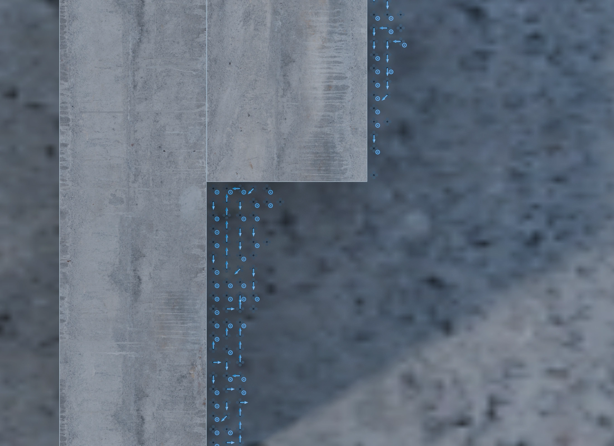
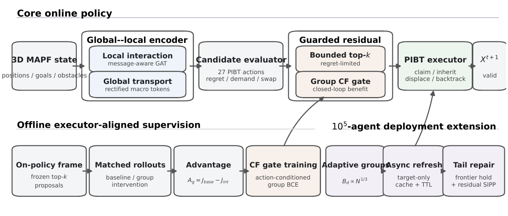

Global flow
Global transport tokens complement local agent interactions.
Learning-guided multi-agent path finding
Global context. Local coordination.
Watch the executionNew / Mesh-matched showcases
Real environment meshes.
Recorded, collision-audited motion.
New showcase configurations, not paper benchmark results. Both use exact 3D distance fields and an added hold-only execution schedule; spatial paths are unchanged. All 64 agents reach their goals. Linear segments are audited with 0.16 m body envelopes. These are kinematic replays, not flight-dynamics simulations. The learned provider ran, but its gate made no candidate-order overrides in these cases; no learned-performance gain is claimed.
01 / Recorded environments

100,000 recorded agent positions per frame. Teal includes both moving and arrived agents. The vertical display scale is exaggerated 5× relative to the horizontal scale. This is a 30 s time-compressed replay, not real-time flight.
02 / Method
Neural candidate ordering.
Conflict resolution by PIBT.

Global transport tokens complement local agent interactions.
Learned scores influence the order of discrete action candidates.
Priority inheritance, claims, backtracking and anti-swap checks select the joint action.
03 / Evidence
The archived benchmark renders preserve recorded solver coordinates and obstacle geometry. Their lighting and surface changes do not change the reported experiments.
The archived 100k replay is sampled without interpolation. Its discrete vertex, edge-swap and obstacle checks do not establish continuous-body clearance. The separate 64-agent showcases use certified linear interpolation and additional execution scheduling.
Snapshots, archived replays and new showcases are identified separately. No generative image synthesis is used. None of these renders demonstrates real-world flight safety.